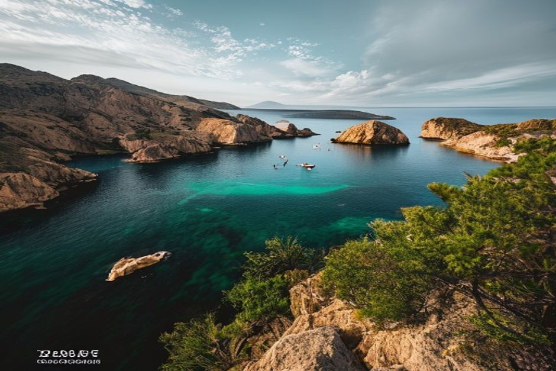
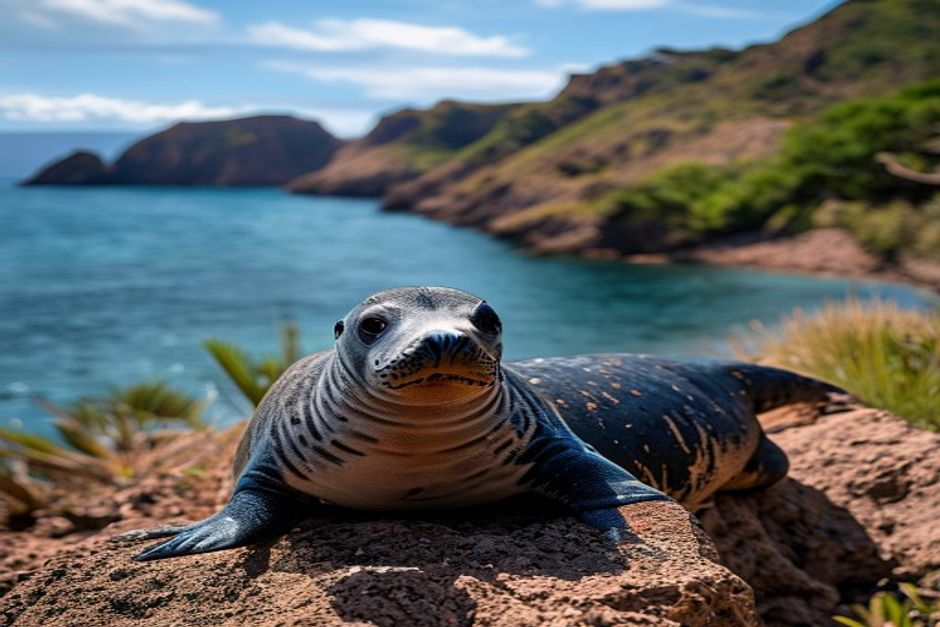

Twenty-two nautical miles southeast of Funchal, three bare volcanic islands rise out of the Atlantic like a piece of the Sahara that drifted out to sea. Here's what the Desertas Islands actually are, how (and whether) you can visit, and why almost nobody is allowed to land.
What are the Desertas Islands?
The Desertas Islands (Ilhas Desertas) are a chain of three uninhabited islands — Ilhéu Chão, Deserta Grande and Bugio — that form part of the Madeira archipelago, visible as a long, flat-topped silhouette from Madeira's eastern coast on a clear day. Unlike the rest of Madeira, they're arid: low rainfall, no permanent fresh water and no laurel forest, just wind-scoured cliffs, scrub and bare rock rising to over 480 metres on Deserta Grande. They've been protected since 1990 and designated the Reserva Natural das Ilhas Desertas in 1995, managed by Madeira's Institute for Nature Conservation and Forests (IFCN), specifically to protect the Mediterranean monk seal colony that breeds along their inaccessible coves.

How far are the Desertas Islands from Funchal, and how do you get there?
The islands sit about 22 nautical miles, or roughly 24km, southeast of Funchal — a crossing of around 1.5 to 2 hours each way by boat, with no scheduled ferry or public transport option. There's no airstrip and no harbour infrastructure; the only way in is by sea, on a vessel licensed to operate inside the reserve. Most trips run as catamaran or motor-launch day excursions departing Funchal Marina in the morning, tracking along Madeira's south coast before crossing open water to the islands.
Can you visit the Desertas Islands independently?
No — independent visits aren't permitted. Because the islands are a strict nature reserve, all access is controlled by the IFCN, and only a small number of licensed tour operators hold authorisation to enter and land there. You don't apply for a permit yourself; you book a seat on one of these operators' organised day trips, and they handle the paperwork and ranger coordination. Landing is only allowed at designated points on Deserta Grande, and the reserve's southern marine zone is completely closed to navigation year-round to protect the seal colony's most sensitive breeding areas.
What wildlife makes the reserve so important?
The headline species is the Mediterranean monk seal, with around 25 to 30 individuals living in and around the Desertas — one of only a handful of breeding colonies left anywhere, and among the rarest marine mammals on the planet. The islands are also a major seabird refuge, hosting large colonies of Cory's shearwaters and Bulwer's petrels that nest in burrows across the cliffs, plus the Desertas wolf spider, a large, venomous species found nowhere else on Earth. Goats and rabbits, introduced centuries ago and blamed for stripping much of the original vegetation, have been the subject of long-running eradication efforts to let native plants recover.

What does a Desertas Islands day trip actually involve?
A typical trip runs as a full day, roughly nine hours door to door — departing Funchal Marina around 9am and returning by early evening. Operators sail along the south coast before crossing to the reserve, usually building in a swim or snorkel stop and lunch served on board. A guided landing on Deserta Grande, if conditions and rangers allow it on the day, is the highlight, but it's never guaranteed — the reserve only permits a limited number of landings per season, and operators only attempt one when the sea is genuinely calm. Trips run seasonally, roughly April through October, and prices for these specialist excursions typically start from around €99 per adult.
When is the best time of year to go, and is it worth it?
Spring through early autumn gives you the calmest seas and the best odds of an actual landing, since operators simply don't run in winter's rougher Atlantic swell. It's worth booking if you care about seeing one of the world's rarest seals in the wild and don't mind a full day committed to a single excursion with no guarantee of stepping ashore. If what you actually want is guaranteed swimming, snorkelling and marine life close to Funchal without giving up a whole day, a private Hidden Coves trip with Chifbay covers similar water without the crossing or the uncertainty — dolphins are a common sight along the same south coast the Desertas boats sail past on their way out.
Madeira keeps its rarest animal on an island most visitors never even hear about.
The Desertas won't fit into every itinerary, and that's rather the point — a reserve this restricted stays wild precisely because so few people get to stand on it. Whether you make the crossing or watch its silhouette from the water on a shorter trip, it's a reminder of how much of Madeira still exists mostly for the animals that live there.